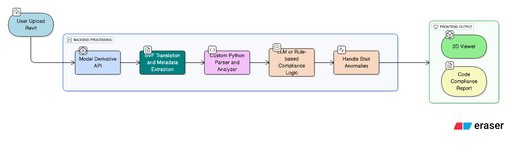
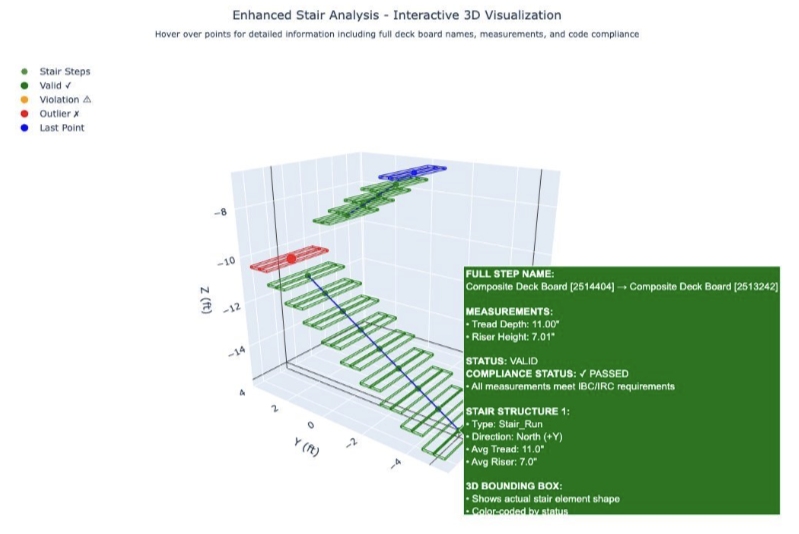

Shibusa Systems
Summer 2025 • Monterey, CA
3D Code Compliance Engine
Software Engineer Intern
Navigating municipal building codes usually means city planners spending up to 10 months thumbing through hundreds of blueprint pages. I built a 3D spatial reasoning engine that parses Revit BIM models directly, catching 50+ structural and zoning violations in minutes so affordable housing projects can get approved in weeks instead of a year.
- Engineered a spatial reasoning algorithm with Autodesk Model Derivative API to detect 50+ IBC/IRC violations in 3D Revit models.
- Slashed building permit evaluation timelines from ~10 months to under 1 month across 200+ municipal models.
- Generated interactive 3D bounding-box visualizations directly for Carmel Planning review officers.